はじめに
Perl はいまやもっとも有名なスクリプト言語の一つです。CGI 用のプログラミング言語としてだけではなく、いろいろな処理が可能な奥の深い言語です。GUI アプリケーションの作成もその一つです。標準では GUI の機能を持たない Perl ですが、そこに GUI の機能を追加したものが Perl/Tk です。
GUI 用のスクリプト言語では、Tcl/Tk が有名です。Tcl は Tool Command Language の略で、もともとはアプリケーションに組み込むためのコマンド言語として設計されたのですが、GUI の基本部品を多数集めた Tk (Tool Kit) と組み合わせることで、とても簡単に GUI アプリケーションを作成することができます。
Tk は機能が豊富で見た目も素晴らしく、とても使いやすい優れた GUI ツールキットです。このため、さまざまな言語に Tk を移植する試みが行われました。もちろん、Perl にも Tk が移植されています。それが Perl/Tk です。Perl/Tk というプログラミング言語があるのではなく、Perl に Tk というモジュールをロードすることで Tk を利用することができます。
そして、Perl/Tk を使うことで、驚くほど簡単に GUI アプリケーションを作成することができるのです。本稿では、Perl/Tk の基本的な機能とプログラミングの方法について説明します。
入手とインストール
モジュール Tk は CPAN (Comprehensive Perl Archive Network) で入手することができます。また、Windows 上で動作する ActivePerl の場合は、PPM というプログラムを使うと簡単です。DOS プロンプトで PPM を起動して install Tk を実行すれば、Tk のダウンロードとインストールが行われます。
Perl/Tk の基礎知識
●オブジェクト指向とリファレンス
Perl/Tk でプログラムを作成する場合、Perl 5 で導入された機能「オブジェクト指向」と「リファレンス」の知識が必要になります。とくに、Perl/Tk では変数へのリファレンス、関数へのリファレンス、無名の配列といった機能を多用します。これらの機能を理解していないと Perl/Tk を使いこなすことは難しいのですが、誌面の都合上、説明は割愛します。
オブジェクト指向とリファレンスの詳しい説明は、最後に示した参考文献を参照してください。また、筆者の Web サイトで公開している Perl 入門講座では、リファレンスとオブジェクト指向について詳しく説明しているので、参考にしてください。
●ウィジェット
Tk では GUI の基本部品のことをウィジェット (widget) と呼びます。Tk に用意されているおもなウィジェットを表 1 と 図 1 ～ 図 11 に示します。
Tk はこれらのウィジェットを組み合わせることで、簡単に GUI を構築することができます。このほかに Perl/Tk では、Tcl/Tk の拡張モジュール Tix のウィジェットも利用できます。
Perl/Tk には Tcl/Tk の Widget Tour に相当する Perl/Tk Widget Demonstrations が用意されています。コマンド widget で起動するので、ひととおり眺めてみてください。その機能の多さに驚かれることでしょう。
| ウィジェット名 | クラス名 | 概要 |
|---|---|---|
| フレーム | Frame | ウィジェットを格納する枠組みを作る |
| ラベル | Label | 文字列やイメージを表示する |
| メッセージ | Message | 複数行の文字列を表示する |
| ボタン | Button | ボタンを作る |
| ラジオボタン | Radiobutton | ラジオボタンを作る |
| チェックボタン | Checkbutton | チェックボタンを作る |
| リストボックス | Listbox | リストボックスを作る |
| スクロールバー | Scrollbar | スクロールバーを作る |
| スケール | Scale | スケールを作る |
| エントリー | Entry | １行の文字列の入力と編集 |
| メニュー | Menu | メニューを作る |
| メニューボタン | Menubutton | メニューボタンを作る |
| イメージ | Image | イメージを作る |
| ビットマップ | Bitmap | ビットマップを作る |
| キャンバス | Canvas | キャンバスを作る |
| テキスト | Text | テキストの入力と編集 |
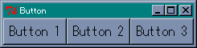 図 1 : ボタンウィジェット
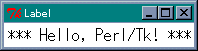 図 2 : ラベルウィジェット
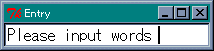 図 3 : エントリーウィジェット
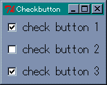 図 4 : チェックボタンウィジェット
 図 5 : ラジオボタンウィジェット
図 5 : ラジオボタンウィジェット
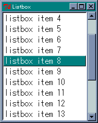 図 6 : リストボックスウィジェットとスクロールバーウィジェット
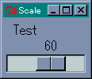 図 7 : スケールウィジェット
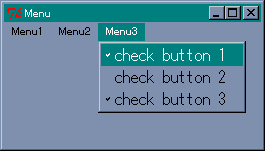 図 8 : メニューウィジェット
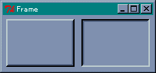 図 9 : フレームウィジェット
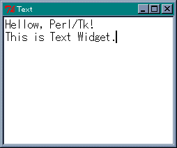 図 10 : テキストウィジェット
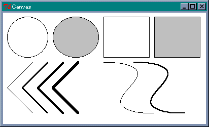 図 11 : キャンバスウィジェット
Perl/Tk プログラムの基本構造
GUI アプリケーションは、ユーザーからの入力やシステムの状態変化など、あるイベントをきっかけに処理を行うイベントドリブン型のプログラムです。このようなプログラムは、一般に次のようなメインルーチンを持っています。
- 初期化
- イベントを取得する
- イベントの種類に応じて処理を振り分ける
- 2 に戻る
2 から 4 をイベントループと呼び、アプリケーションはユーザーからの入力などのイベントを待ちます。そして、3 の処理に対応する機能がバインディング (binding) です。バインディングは、ウィンドウでイベントが発生したときに、それに応じて実行するプログラムを設定します。このプログラムをイベントハンドラとかコールバック関数と呼びます。
Perl/Tk で GUI アプリケーションを作成する場合、次の手順にしたがってプログラムを作成します。
- メインウィンドウを作る
- ウィジェットを設定してウィンドウに配置する
- イベントループを開始してイベントを処理する
そして、必要に応じてコールバック関数を作成します。
それでは実際にボタンを一つ表示してみましょう。 プログラムをリスト 1 に、画面を図 12 に示します。リスト 1 : Button の表示 # # List 1 : Button の表示 # use Tk; $top = MainWindow->new(); $button = $top->Button( -text => 'EXIT', -command => \&exit ); $button->pack(); MainLoop();
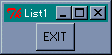 図 12 : リスト 1 の画面
最初に必要なことが、use 文でモジュール Tk をロードすることです。次に、MainWindow クラスのメソッド new を呼び出してメインウィンドウを生成します。返り値はメインウィンドウを表すオブジェクトです。そして、このウィンドウにボタンを配置します。ボタンを生成するメソッドは Button で、ボタンを表すクラスと同じ名前になっています。
Tk の場合、ウィジェットを生成しただけではウィンドウに配置することはできません。ウィジェットの配置はジオメトリーマネージャ (Geometry Manager) が担当します。ここでは pack を使っています。最後に MainLoop() を呼び出してイベントループに入ります。
簡単なプログラムですが、Perl/Tk で GUI アプリケーションを作成する場合の基本的な構造を表しています。たったこれだけのプログラムですが、ボタンを表示することができ、そのボタンを押すことでプログラムを終了することができます。
ウィジェットの生成
Perl/Tk の場合、ウィジェットはクラスに対応しています。ウィジェットを作ることは、そのクラスのオブジェクトを生成することと同じです。オブジェクトを生成するメソッドは、ウィジェットのクラスと同じ名前で、次の形式で呼び出します。
$widget = $parent->widgetClass(option => value, ...);
widgetClass はウィジェットのクラス名で、$parent はウィジェットを配置する親ウィジェット（通常はメインウィンドウかフレームウィジェット）を表します。メソッドの返り値はウィジェットに対応するクラスのオブジェクトです。
●オプションの設定
ウィジェットには多数の設定パラメータがあります。これを Tk ではオプションといいます。オプションの値は、ユーザーが自由に設定したり変更することができます。通常、オプションは「 - 」から始まる文字列です。ほとんどのウィジェットで共通するオプションを表 2 に示します。
| オプション | 説明 |
|---|---|
| -foreground (-fg) | 文字や線を描くのに使用する色を指定 |
| -background (-bg) | 背景色の指定 |
| -activebackground | アクティブになったときの背景色の指定 |
| -text | ウィジェット内に表示されるテキスト |
| -textvariable | テキストを格納する変数を指定 |
| -image | ウィジェット内に表示されるイメージ |
| -bitmap | ウィジェット内に表示されるビットマップ |
| -borderwidth (-bd) | ウィジェットの枠の幅 |
| -relief | ウィジェットの枠のスタイル |
| -height | ウィジェットの高さ |
| -width | ウィジェットの幅 |
| -anchor | ウィジェットや表示されるデータの位置を指定 |
ウィジェットの幅と高さは、テキストを表示するウィジェットでは文字数、それ以外のウィジェットはピクセル単位となります。オプションは option => value の形式で指定します。
リスト 1 の Button メソッドの場合、オプションは -text と -command の二つがあります。-text はボタンの名前を設定するオプションで、値は文字列です。-command はボタンを押したときに実行するコールバック関数を設定するオプション、つまりバインディングを設定します。
オプションはウィジェットを生成する時に設定することができますが、あとから configure メソッドで値を設定したり変更することができます。また、cget メソッドで値を取得することができます。
ラベルなど文字列を表示するウィジェットでは、configure で表示する文字列を変更することができますが、もっと便利なオプションが用意されています。-textvariable オプションで変数を指定すると、その変数の値がウィジェットに表示されます。そして、変数の値を書き換えると、ウィジェットの表示も書き換えられます。これはとても便利な機能です。
簡単な例として、ボタンを押した回数をラベルに表示するプログラムを作りましょう。リスト 2 を見てください。
リスト 2 : -textvariable の使い方
#
# List 2 : -textvariable の使い方
#
use Tk;
$count = 0;
$buffer = "button is pressed 0 time";
sub push_button {
$buffer = sprintf("button is pressed %d times", ++$count );
}
$top = MainWindow->new();
$top->Label( -textvariable => \$buffer )->pack();
$top->Button( -text => 'Button', -command => \&push_button )->pack();
MainLoop();
ラベルを生成するときに、-textvariable オプションに変数 $buffer を指定します。変数はリファレンスで指定します。これで $buffer の値がラベルに表示されます。ボタンを押したときに実行される関数が push_button です。ここで $buffer の値を書き換えるだけで、ラベルの表示を変更することができます。ボタンを押したときの画面を図 13 に示します。
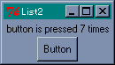 図 13 : リスト 2 の画面
このほかに、ウィジェットによってはオプションの値と変数を結び付ける -variable が用意されています。これらのオプションを使えば、configure や cget を使わなくても、オプションの値を取得したり変更することができます。
ウィジェットには多数のオプションとメソッドが用意されています。詳細は文献やマニュアルなどを参照してください。
●ジオメトリマネージャ
Tk ではジオメトリマネージャがウィジェットの配置を担当します。標準では 3 種類のマネージャが用意されています。
- place マネージャ
指定した座標にウィジェットを配置する。 - pack マネージャ
ウィンドウにウィジェットを詰め込む。 ウィジェットの数や大きさによって、ウィンドウの大きさも変化する。 - grid マネージャ
ウィジェットを格子状に配置する。 ウィジェットの数や大きさによって、ウィンドウの大きさも変化する。
この中でいちばんよく使われるマネージャが pack です。ウィジェットを詰め込む方向は -side オプションで変更することができます。リスト 2 では、ボタンの幅がウィンドウよりも小さくなりましたが、これをいっぱいに広げるには -fill オプションを使います。方向は x, y, both で指定します。
電卓のようにボタンを格子状に配置する場合は grid マネージャが便利です。これらのマネージャとフレームウィジェットを組み合わせることで、かなり複雑な配置にも対応することができます。
place マネージャはウィジェットの位置を座標で指定するため少々めんどうです。たいていの場合は pack で用が足りることと、pack と grid でウィジェットを配置すると、ウィンドウのリサイズにも簡単に対応できることから、place を使うことはあまりないでしょう。
簡単な例題を示します。リスト 3 はボタンを縦に四つ並べ (図 14)、リスト 4 はボタンを横に四つ並べます (図 15)。リスト 5 はボタンを 3 行 3 列に並べます (図 16)。リスト 6 はジオメトリマネージャとフレームの組み合わせです(図 17)。上のフレーム $up は pack でボタンを横に 3 つ並べ、下のフレーム $down は pack でボタンを縦に 3 つ並べます。
このほかに、Perl/Tk では Tix の form マネージャを利用することができます。
リスト 3 : ボタンを四つ縦に並べる
#
# List 3 : ボタンを四つ縦に並べる
#
use Tk;
$top = MainWindow->new();
foreach $i (1..4){
$top->Button( -text => "button $i" )->pack( -fill => 'x' );
}
MainLoop();
リスト 4 : ボタンを四つ横に並べる
#
# List 4 : ボタンを四つ横に並べる
#
use Tk;
$top = MainWindow->new();
foreach $i (1..4){
$top->Button( -text => "button $i" )->pack( -side => 'left', -fill => 'x' );
}
MainLoop();
リスト 5 : 3 行 3 列にボタンを並べる
#
# List 5 : 3 行 3 列にボタンを並べる
#
use Tk;
$top = MainWindow->new();
for( $y = 0; $y < 3; $y++ ){
for( $x = 0; $x < 3; $x++ ){
$top->Button( -text => "Button $x$y" )->grid( -column => $x, -row => $y );
}
}
MainLoop();
リスト 6 : フレームウィジェットと組み合わせる
#
# List 6 : フレームウィジェットと組み合わせる
#
use Tk;
$top = MainWindow->new();
$up = $top->Frame();
$down = $top->Frame();
foreach $i (1..3) {
$up->Button( -text =>"Button $i" )->pack( -side => 'left' );
}
foreach $i (4..6) {
$down->Button( -text =>"Button $i" )->pack( -fill => 'x' );
}
$up->pack();
$down->pack( -fill => 'x' );
MainLoop();
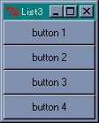 図 14 : リスト 3 の画面
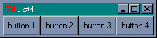 図 15 : リスト 4 の画面
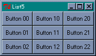 図 16 : リスト 5 の画面
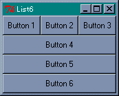 図 17 : リスト 6 の画面
●バインディングの設定
Tk ではウィジェットごとにバインディングを設定します。バインディングの設定はウィジェットの -command オプションか bind メソッドで行います。コールバック関数は、関数へのリファレンスか無名の配列で指定します。無名の配列を使う場合、最初の要素が関数へのリファレンス、あとの要素はその関数へ渡す引き数になります。
簡単な例として、リスト 2 のプログラムを複数のボタンに対応するように改造してみましょう。ボタンは番号で管理して、push_buttonにはボタンの番号を渡します。プログラムをリスト 7 に示します (図 18)。
リスト 7 : ボタンを押した回数を表示する
#
# List 7 : ボタンを押した回数を表示する
#
use Tk;
@count = (0, 0, 0, 0, 0);
$buffer = "button 1 is pressed 0 time";
sub push_button {
my $n = shift;
$buffer = sprintf("button %d is pressed %d times", $n, ++$count[$n] );
}
$top = MainWindow->new();
$top->Label( -textvariable => \$buffer )->pack();
foreach $i (1..4){
$top->Button( -text => "button $i", -command => [\&push_button, $i] )->pack( -fill => 'x' );
}
MainLoop();
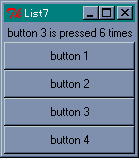 図 18 : リスト 7 の画面
ボタンのコールバック関数は、無名の配列で指定します。
-command => [\&push_button, $i]
ここで、無名の配列には変数 $i の値、つまりボタンの番号がセットされることに注意してください。したがって、番号 1 のボタンを押した場合、呼び出される関数 push_button には 1 が渡されます。これで押されたボタンの番号を知ることができます。
このほかに、コールバック関数の設定には、無名の関数を使うこともできます。また、コールバック関数にメソッドを登録する場合は次のように行います。
[ 'methodname', $object, args, ... ]
最初の要素がメソッドの名前 methodname で、次にオブジェクト $object を指定して最後に引き数を指定します。これで $object->methodname(args, ...) と同様に呼び出すことができます。
●bind メソッドによるバインディングの設定
bind メソッドでバインディングを設定する場合、イベントとコールバック関数を次の形式で指定します。
$widget->bind( eventsequence, callback );
すでに設定されているコールバック関数がある場合、新しい関数に差し替えられます。callback を省略すると、そのイベントに設定されている関数が返されます。引き数をすべて省略すると、そのウィジェットに設定されている、すべてのイベントをリストにして返します。
それから、bind で設定されたコールバック関数が呼び出される場合、第 1 引き数にはウィジェットのオブジェクトがセットされることに注意してください。そのあとに指定した引き数がセットされます。
イベント eventsequence は、次の形式で指定します。
<modifier-modifier-type-detail>
type は GUI で発生するイベントタイプを表します。ユーザーが操作するときに発生するおもなイベントタイプを表 3 に示します。このほかにも、ウィンドウが破棄されたときに発生するイベントなど、さまざまなイベントタイプがあります。
| Key, KeyPress | キーが押された |
| KeyRelease | キーが離された |
| Button, ButtonPress | マウスのボタンが押された |
| ButtonRelease | マウスのボタンが離された |
| Motion | マウスの移動 |
| Enter | マウスカーソルがウィンドウの中に入った |
| Leave | マウスカーソルがウィンドウから出た |
| Map | ウィジェットが画面に現れたとき |
| Unmap | ウィジェットが画面から消えたとき |
| Configure | ウィンドウがリサイズなどで再構成された |
マウスとキーのイベントには、detail でボタンやキーの種類を指定します。マウスでは左ボタンが 1 となります。キーの種類は名前で指定します。英数字はその文字がそのまま名前になります。このほかに、改行キーに対する Return、バックスペースキーに対する BackSpace などがあります。
detail を指定する場合は type を省略することができます。ただし < 1 > という指定は、<KeyPress-1> ではなく <Button-1> になるので注意してください。また、通常の英数字の場合は < > を省略することができます。つまり、<KeyPress-a> は a と書くことができます。それから、<KeyPress> のように detail を省略すると、種類によらずキーが押されたときに設定されたコールバック関数が実行されます。
イベントタイプの前にはモディファイア (modifier) をつけることができます。たとえば、<Control-d> はコントロールキーと d キーを同時に押したときのイベントを表します。おもなモディファイアを表 4 に示します。
| Control | Ctrl キーを押しながらの入力 |
| Shift | Shift キーを押しながらの入力 |
| Alt | Alt キーを押しながらの入力 |
| Button1, B1 | マウスの左ボタンを押しながらの入力 |
| Button3, B3 | マウスの右ボタンを押しながらの入力 |
| Double | ダブルクリック |
| Triple | トリプルクリック |
それから、Button2 は右ボタンではなく中ボタンになります。右ボタンは Button3 になるので注意してください。左ボタンのダブルクリックに対応するイベントは <Double-1> となります。また、イベントタイプは複数個指定することができます。たとえば、<Escape>a は Esc キーが押された後で a キーを押したイベントに対応します。
イベントの詳細情報をコールバック関数に渡すには、関数 Ev( type ) を使います。type には文字を指定します。よく使われる type を表 5 に示します。このほかにも 30 種類以上の情報にアクセスすることができます。
| 名前 | 説明 |
|---|---|
| マウスボタンの番号 | |
| マウスカーソルの x 座標 | |
| マウスカーソルの y 座標 | |
| イベントの発生時刻 | |
| キーに対応する文字 | |
| キーに対応する名前 |